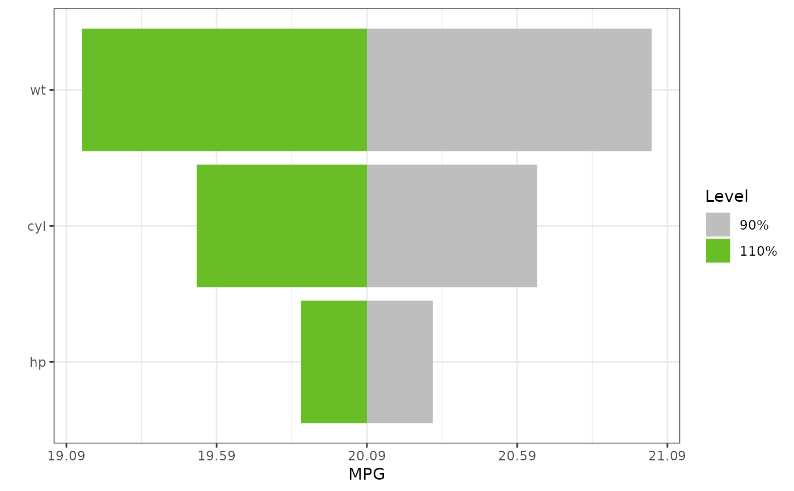

A tornado plot is a visualization of the range of outputs expected from a variety of inputs, or alternatively, the sensitivity of the output to the range of inputs. The center of the tornado is plotted at the response expected from the mean of each input variable. For a given variable, the width of the tornado is determined by the range of the variable, a multiplicative factor of the variable, or a quantile of the variable. Variables are ordered vertically with the widest bar at the top and narrowest at the bottom. Only one variable is moved from its mean value at a time. Factors or categorical variables have also been added to these plots by plotting dots at the resulting output as each factor is varied through all of its levels. The base factor level is chosen as the input variable for the center of the tornado.
# S3 method for cv.glmnet
tornado(
model,
type = "PercentChange",
alpha = 0.1,
dict = NA,
modeldata,
form,
s = "lambda.1se",
...
)a model object
PercentChange, percentiles, or ranges
the level of change
a dictionary to translate variables for the plot. The dictionary
must be a list or data.frame with elements old and new. The
old element must contain each variable in the model.
the raw data used to fit the glmnet model
the model formula
Value(s) of the penalty parameter lambda at which predictions are required. Default is the value s="lambda.1se" stored on the CV object. Alternatively s="lambda.min" can be used. If s is numeric, it is taken as the value(s) of lambda to be used.
further arguments, not used
a tornado_plot object
the type of tornado plot
the data required for the plot
the model family if available
if (requireNamespace("glmnet", quietly = TRUE))
{
form <- formula(mpg ~ cyl*wt*hp)
mf <- model.frame(form, data = mtcars)
mm <- model.matrix(form, data = mf)
gtest <- glmnet::cv.glmnet(x = mm, y= mtcars$mpg, family = "gaussian")
torn <- tornado(gtest, modeldata = mtcars, form = formula(mpg ~ cyl*wt*hp), s = "lambda.1se",
type = "PercentChange", alpha = 0.10)
plot(torn, xlabel = "MPG")
}
